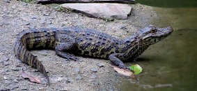

Algunos datos sobre el yacaré overo...

- Es una especie de cocodrilo de la familia Alligatoridae.
- Su nombre común es yacaré overo y su nombre científico, Caiman latirostris.
- Puede superar los tres metros de longitud.
- Construye su nido en alguna laguna tranquila.
- Para ello, forma un montículo con materiales que encuentra en el lugar.
- El nido puede tener hasta 1 metro de diámetro y 60 centímetros de altura.
- Las hembras cuidan de las crías en solitario protegiéndolas de posibles depredadores, como las aves rapaces.
- Su dieta es exclusivamente carnívora; ingiere principalmente caracoles y otros moluscos y crustáceos.
- Captura reptiles y mamíferos pequeños, como ratas, ratones y murciélagos.
- Sus principales enemigos naturales son el carancho, el gavilán cangrejero y el jabalí.
- Pero sobre todo, los seres humanos, que quieren cazarlo para fabricar carteras y zapatos con su piel.
- Habita en regiones pantanosas y lacustres de Bolivia, Brasil, Argentina, Paraguay y Uruguay.
- En Uruguay puede encontrarse sobre la cuenca de la laguna Merín, desde Rocha a Cerro Largo, en la parte norte del río Negro, en el río Tacuarembó y en todo el litoral hasta Paysandú.
- Lo llaman overo porque su piel tiene una coloración de manchas difusas, entre el verde intenso y el gris pálido.
- Gracias al color de su piel puede mimetizarse con la densa vegetación propia de su hábitat.